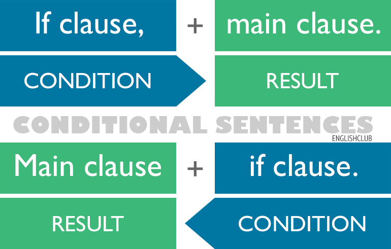
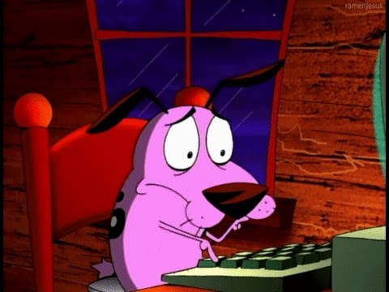
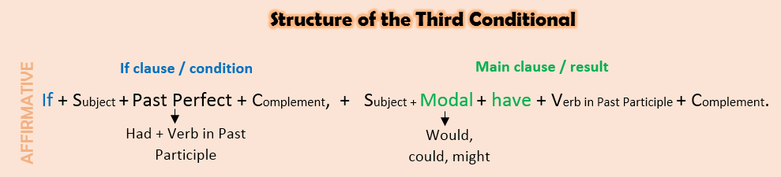
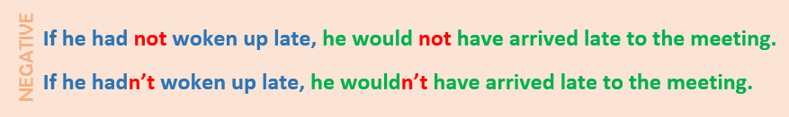
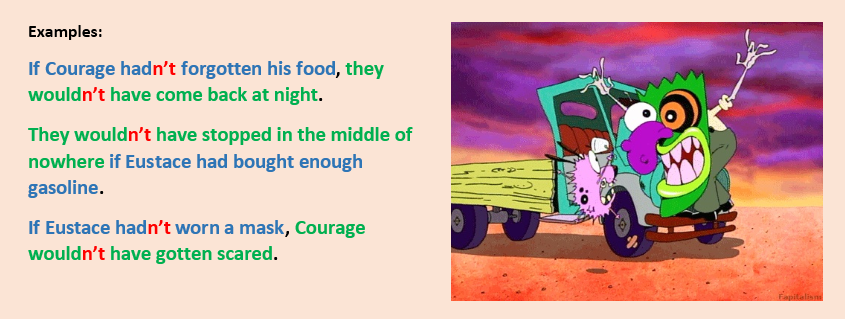

Explanation
First of all, let’s review what a conditional is.
As you may know, there are 4 types of conditionals: 0, 1st, 2nd and the one we are about to see. They are also called if clauses because of a part of its structure, and this can help you to spot these types of sentences.
All conditionals are formed by two sentences or clauses: the if clause, which is the condition, and the main clause, which would be the result of the stated condition.

As we see in the image, we can start with the if clause and then put the main clause or vice versa, just pay attention to the fact that we put a comma (,) in the middle of the sentences if we put the if clause first.
Now that we remembered this information let’s focus on the third conditional.
When do we use it? We use the third conditional to express past wishes or events that are unreal. That’s why it is also called the Unreal Conditional. For example:
If I had saved my money, I would have bought a small car. (But in reality I hadn’t saved any money, so it is a wish or an imaginary scenario.)
We can change the order and the meaning does not change. Just notice that in this case the comma is not necessary.
I would have bought a small car if I had saved my money.
What is its structure?

*The modal would is the most common but we can use could or might. And remember that the modal and the word have can be contracted as well = would’ve, could’ve…
The negation goes in the auxiliary and the modal. As you see it can be contracted.

Let's see some examples:
So, as you see, all these situations are unreal, because in the end they did end up in the middle of nowhere with Eustace using a mask and scaring Courage.